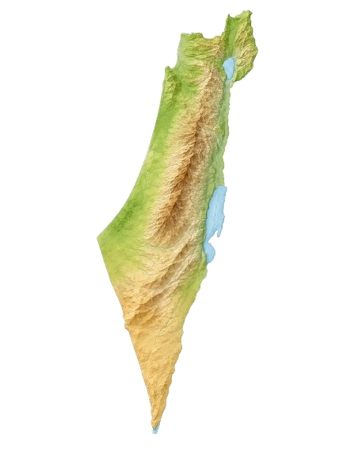
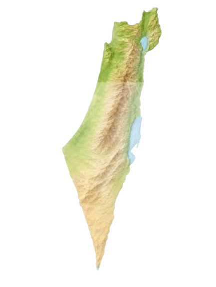
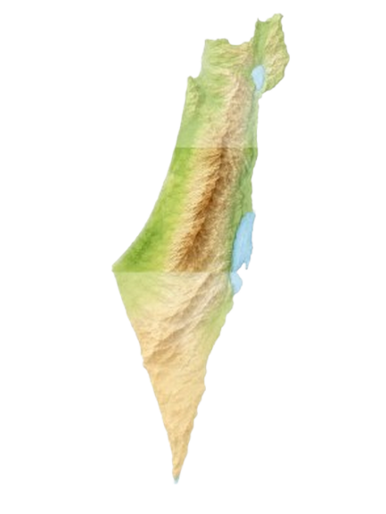
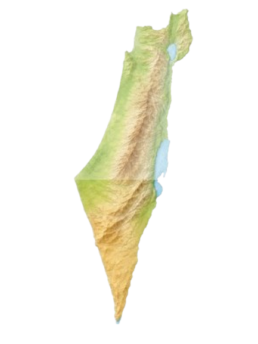

יוצאים מהמסך אל הטבע
רעיונות רגועים למסלולים קצרים, עונות השנה וקצת אוויר באמצע היום
אתם רואים? לא רק אני הולך לטייל. עוד הרבה אנשים כבר יצאו לדרך. בואו איתי ונמצא לכם את הטיול שהכי מתאים לכם.

המלצות ממטיילים
"בתור מי שמבלה 10 שעות ביום מול מסכים, הסופ"שים שלי בדרך כלל נראו כמו המשך ישיר של השבוע – פשוט מול מסך אחר. האתר הזה באמת הוציא אותי מהמחשב אל הטבע. במקום לשרוף שעות בחיפושים ובסוף להישאר בבית, מצאתי מסלול מדהים תוך 3 דקות, ארזתי תיק ויצאתי. מומלץ בחום לכל מי שצריך ניתוק!"
– תומר ק., תל אביב
"הילדים שלי היו דבוקים לטאבלטים ולא משנה כמה ניסיתי לשכנע אותם לצאת, זה תמיד נגמר בוויכוחים. בזכות האתר מצאנו מסלול מעיינות קליל שהתאים לנו בול, עם הוראות הגעה מדויקות שלא השאירו מקום לברבורים. סוף סוף נשמנו קצת אוויר נקי."
– מיכל ד., מודיעין
"אתר חובה בסימניות! תמיד היה לי את החשק לטייל אבל לא היה לי כוח לחפור באינטרנט כדי למצוא לאן. הממשק פה פשוט, מהיר ומדויק. פשוט סוגר את הלפטופ ויוצא לדרך."
– עידן ושיר, חיפה
בואו נמצא לכם מסלול
ענו על כמה שאלות קצרות, והמדריך שלנו יציע לכם כיוון לטיול שמתאים לזמן, לעונה ולסגנון שלכם.
באיזה אזור תרצו לטייל?
כמה זמן יש לכם?
עם מי אתם יוצאים?
איזה סוג טבע אתם מעדיפים?
כמה אתם רוצים להתאמץ?
באיזו עונה אתם מטיילים?
🌿 ההמלצה שלכם



💡 רעיון מתחלף
לחצו על הכפתור ובכל פעם תקבלו רעיון קצר אחר ליציאה מהבית.
למה בכלל לצאת לטבע?
לפעמים אנחנו מבלים שעות מול מסכים ושוכחים שאפשר לעצור לרגע. האתר “קצת אוויר” נועד לעזור לכם למצוא מסלול פשוט ונגיש, בלי להסתבך בחיפושים ארוכים.
| סוג טיול | למי זה מתאים? | מתי כדאי? |
|---|---|---|
| מסלול קצר | למי שרוצה להתאוורר בלי יום שלם בחוץ | אחרי לימודים או בסוף שבוע קצר |
| מסלול מים | למשפחות, חברים ומי שאוהב טבע ירוק | אביב וקיץ |
| תצפית או מדבר | למי שמחפש שקט ונוף פתוח | סתיו וחורף |